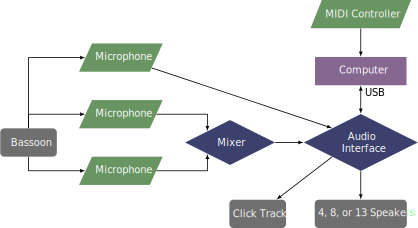

This piece was composed in 2007 and premiered by Lionel Bord. The piece can be obtained by contacting the composer at his website. Currently, the patch does not run in modern versions of Max.
This piece calls for an audio interface that has fourteen outputs, one of which is a click track. It also requires thirteen speakers which are placed in a three-dimensional array around the audience, including one suspended from the ceiling! The score comes with two diagrams to show where all the speakers should be placed. The instructions that come with the patch seem to indicate that setups with four or eight speakers will also work. Three microphones are used, one placed above the bell and two that are placed on either side of the bassoonist. These two signals should be combined with a mixer before going into the audio interface. So overall, the audio interface needs two inputs and at least five, eight, or fourteen outputs. A MIDI controller that sends the value 127 over controller 64 is also used to advance the patch, or alternatively, the space bar can be used.
A setup diagram for this piece is shown below. 
This patch requires several external libraries, and currently there are some issues with 64-bit compatibility. The composer has included links to these packages with the documentation provided with the patch. Additionally, there are many errors that prevent the patch from running in its current form. The max patch is shown in the screenshot section. From here, the performer should press the "GLOBAL INIT" button in the center of the patch. If the performer is using a MIDI controller, then the performer should press the button in the "KEY CONTROL" section, as well as the white box in the "EVENTS" section by the "pedal OFF" and "pedal ON" section.
Recording of the introduction on SoundCloud.
This piece really showcases the technical abilities of a performer who can play this piece. There are frequent leaps that are fast, wide, chromatic, and rhythmically difficult. There are many multiphonics accomplished through fingerings as well as breath support. The range is changing almost constantly between the uppermost notes and the lowermost notes. This piece would challenge any professional, and it is certainly out of reach of undergraduate students, and probably many graduate students. The electronics are not too difficult once everything is set up; the triggers are infrequent and would be easy to do. However, the hardware and setup of the speakers make this piece difficult to perform in its original context.
The combination of the chromaticism, multiphonics, dissonant harmonies, and the electronics firmly place this piece in the avant-garde style. Audiences not accustomed to this style will likely struggle with this piece.
©2024 by Benjamin Bradshaw
Logo ©2024 by Hannah Bradshaw